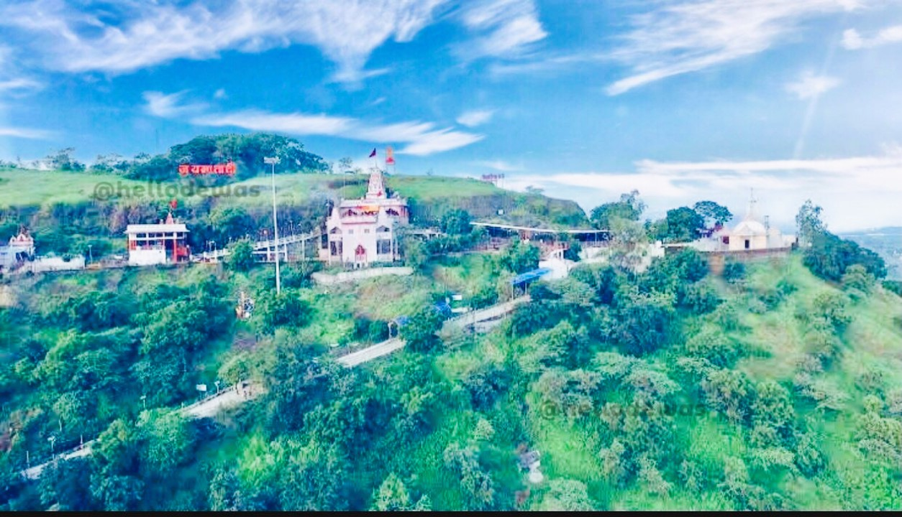
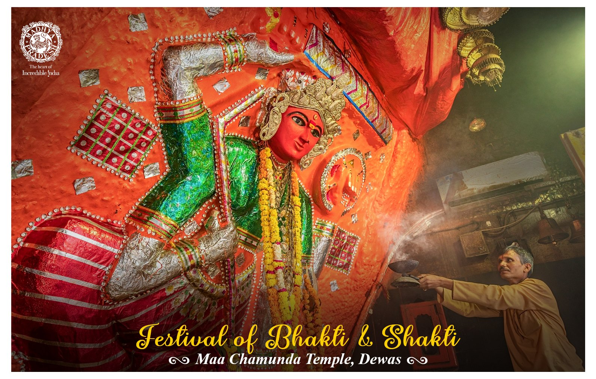

two goddesses sitting in the temple, one of which is known as Tulja Bhavani and the other is Chamunda Devi. Tulja Bhavani is also known as
Chhoti Maa and Chamunda Devi as Badi Maa. The local people here say that there was a relationship of sisters between the elder mother and
the younger mother. Once there was a fight between the two over some issue. Due to the dispute, both the sisters started leaving their place.
It is told that the elder mother got angry and started going to Patal and left the younger one. Seeing both the mothers angry, Hanuman ji and
Bherubaba requested them to pacify their anger, but by then half of Badi Devi's body had entered the underworld and she stopped at the
hillock in such a condition.Dewas Mata Temple is considered one of the 52 Shaktipeeths. It is said that parts of the mother's body had fallen
on other Shaktipeeths of the country, but here the mother's blood had fallen on the tekri, due to which mother Chamunda Devi appeared here.
Chamunda Devi is considered one of the seven main goddesses. Let us tell you that the Tulja Bhavani temple located on Tekri was established
by the Marathi royal family and they used to worship Mata as their Kuldevi. Both mothers are real sisters. It is said that Vikramaditya's
brother Bharthari did penance. It is said about the temple that this temple is from time immemorial. But there is no evidence of the
antiquity of the temple.